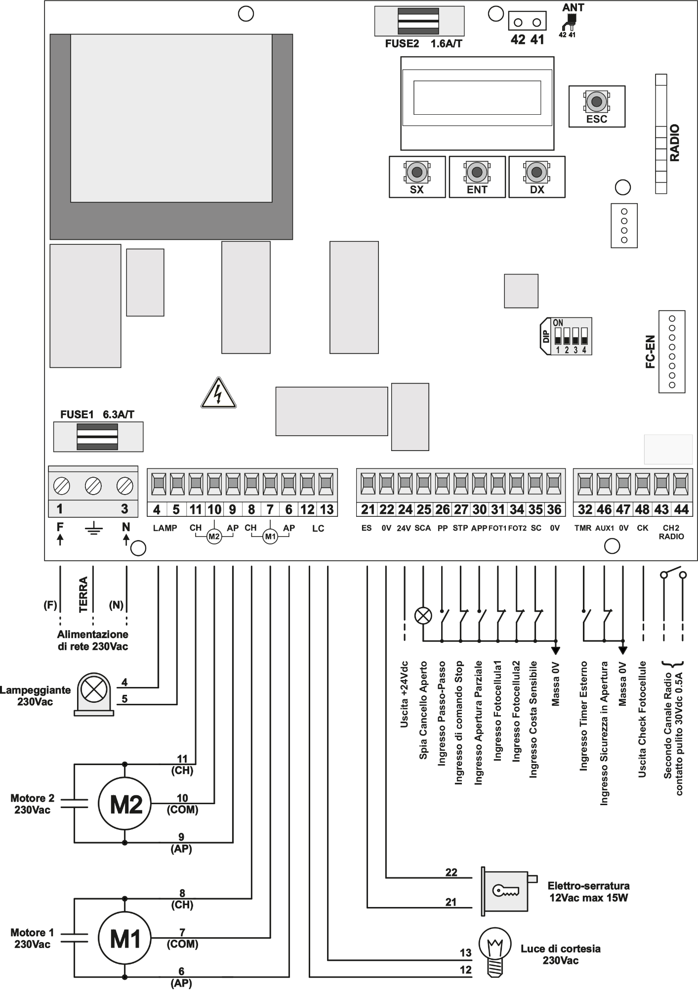

Dati Tecnici
| Caratteristica | DRSCB433 | DRSCBMF |
|---|---|---|
| Tensione di funzionamento | 230 V AC ± 10% (50-60 Hz) | 230 V AC ± 10% (50-60 Hz) |
| Tensione di uscita Motore | 230 V AC | 230 V AC |
| Potenza max. Motore | 500 W per motore | 500 W per motore |
| Tensione di uscita Lampeggiante | 230 V AC | 230 V AC |
| Potenza max. Lampeggiante | 40 W | 40 W |
| Uscita relè Ausiliario AUX | - | Contatto pulito |
| Tensione uscita per servizi | 24 V DC (15 W max) | 24 V DC (15 W max) |
| Tempo di lavoro | Programmabile (3s - 30s) | Programmabile (3s - 30s) |
| Tempo di chiusura automatico | Programmabile (max 240 s) | Programmabile (max 240 s) |
| Modulo Radio | 433,92 MHz | 433,92 - 868 MHz |
| Dimensioni Box | 240 x 180 x 100 mm | 240 x 180 x 100 mm |
| Grado di protezione | IP55 | IP55 |
| Temperatura di esercizio | - 20° C / + 70° C | - 20° C / + 70° C |
Schema di collegamento

| Morsetto | Sigla | Descrizione |
|---|---|---|
| 1, 3 | F - N | Alimentazione 230 V AC ± 10% (50-60Hz) |
| - | GND | Collegamento di Terra |
| 4, 5 | LAMP | Uscita lampeggiante 230 V AC |
| 11 | CH | Uscita chiusura motore M2 (anta battuta) |